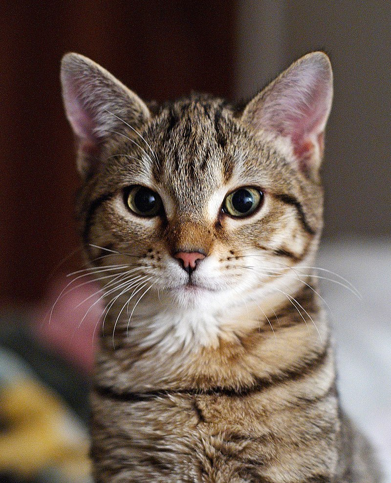
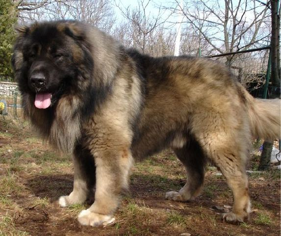

Naminė katė arba katė (Felis catus) katinių (Felidae) šeimos, rainuotųjų kačių (Felis) genties naminis, plėšrusis žinduolis, žmonių išplatintas ir auginamas visame pasaulyje, išskyrus Antarktidą. Katė yra mėsėdis plėšrūnas, gali medžioti daugiau nei 1000 rūšių smulkių ir nedidelių gyvūnų. Be žmonių priežiūros naminės katės sulaukėja, sėkmingai išgyvena laisvėje, dauginasi ir kartais sudaro ištisas sulaukėjusių kačių kolonijas.
Naminis šuo arba šuo (Canis lupus familiaris) šuninių (Canidae) šeimos, šunų (Canis) genties naminis gyvūnas. Čihuahua - mažiausia naminių šunų veislė. Iki šiol naminių šunų kilmė neišaiškinta: vieni mokslininkai mano, kad jie galbūt kilę iš pilkųjų vilkų (Canis lupus), bet kiti mano, kad pilkieji vilkai nėra naminių šunų protėviai, ir šunys buvo prijaukinti iš jau išnykusios, mums nežinomos kitos šunų (Canis) genties rūšies, dažnai minint nežinomą vilkų rūšį. Tad priklausomai nuo šaltinio, mokslinėje literatūroje, kurioje neigiami pilkieji vilkai kaip tiesioginiai naminių šunų protėviai, ir laikomi atskira rūšimi, rašomi Canis familiaris, tie šaltiniai, kurie juos kildina iš pilkųjų vilkų ir laikomi jų porūšiu, rašomi Canis lupus familiaris.
